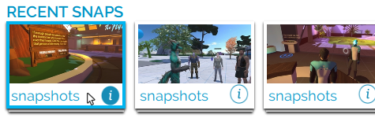

Travel Between Worlds¶
High Fidelity is made up of many virtual places that let you participate in activities and interact with the people around you. Many of these places are beautifully detailed worlds that are interesting to explore at any time, while others were built to host events and engage with the people around you.
On This Page:
GoTo App¶
The GoTo app lets you travel between different places in the High Fidelity metaverse. Many of our places are created by users just like you.
To go and explore new places:
- In Interface, pull up your tablet or HUD and go to GoTo.
- If you know where you want to go, enter the domain address or place name. As you type, the matching places will show up. Otherwise, browse the open places under ‘Featured’ and ‘Places’.
- Click on a place name to go to the place. If you have permissions, you will be transported to that location automatically.

The GoTo app also shows you a visual feed of snapshots that people have taken and shared in the metaverse. Clicking on a snap will take you directly to the place where the picture was taken.

Visit a Friend¶
Once you’ve made a friend, you can see where they are and even teleport directly to them.
- In Interface, open your tablet or HUD and go to People.
- Click ‘Connections’ and find the friend you want to visit.
- Select their name then ‘Visit’.
See Also